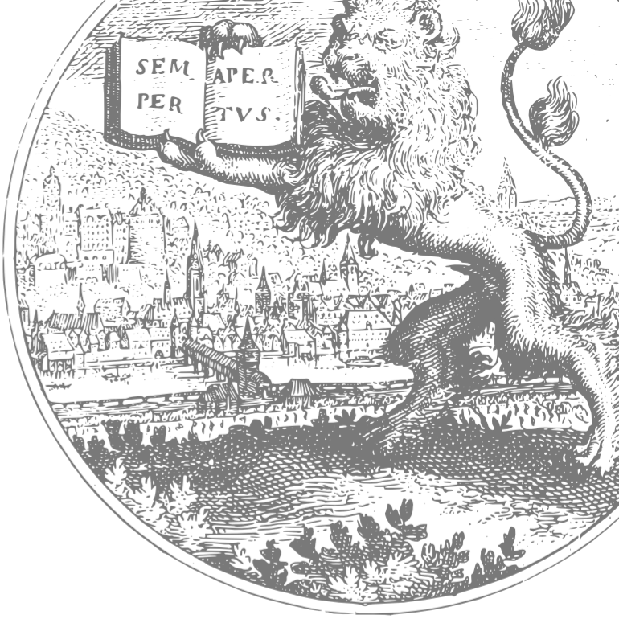

GlossAccordingToContent
- Bezeichnung (deutsch)
- Glosse gemäß ihres Inhalts
- Bezeichnung (englisch)
- gloss according to its content
- Definition (deutsch)
- Glosse aus der Perspektive ihres Inhalts.
- Definition (englisch)
- A gloss from the perspective of its content.
- URI dieses Konzepts
- https://lod.ub.uni-heidelberg.de/ontologies/heieditions/hc/current/GlossAccordingToContent
- Typ der RDF-Ressource (rdf:type)
- https://www.w3.org/2002/07/owl#Class
- FacetClass
- Unterklasse von (rdfs:subClassOf)
- Gloss
- Oberklasse von
- GrammaticalGloss
- InterpretativeGloss
- LexicalGloss
- NamedEntityGloss
- ResponsiveGloss
- Scholium
- SuppletiveGloss
- TranslationGloss
- RDF-Auszüge zu dieser Ressource
- Turtle,
XML/RDF,
JSON-LD
